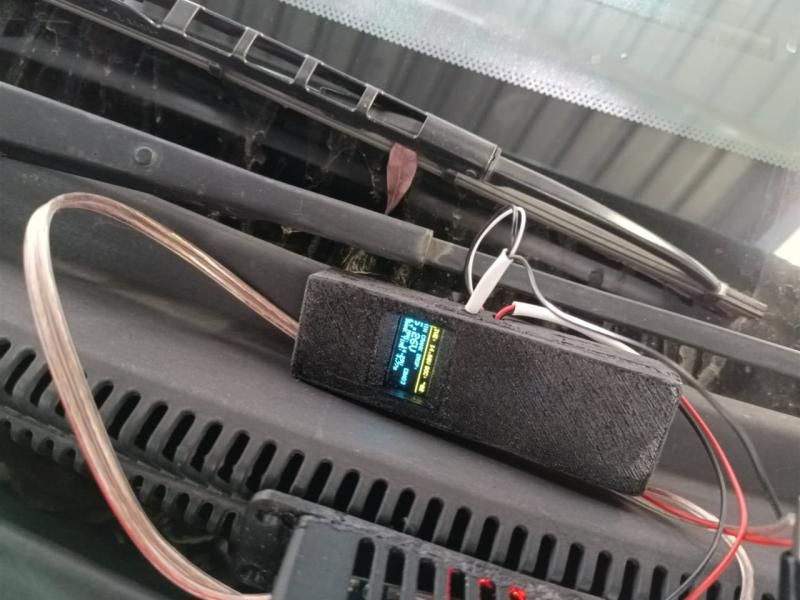
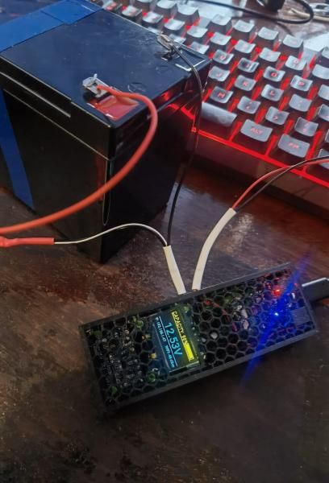
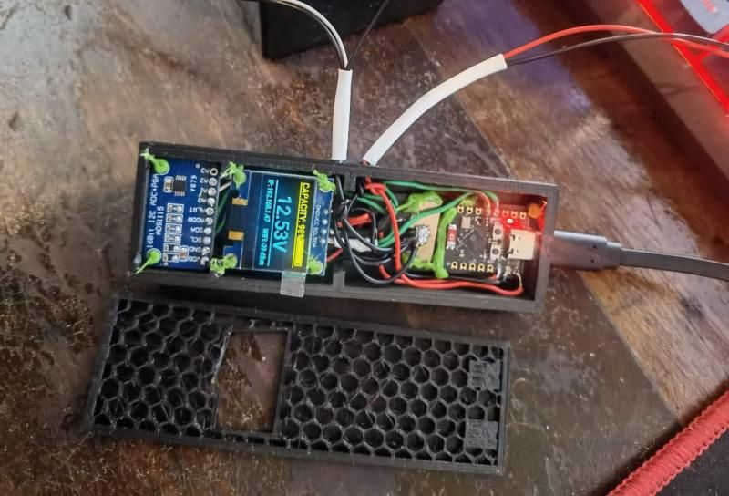
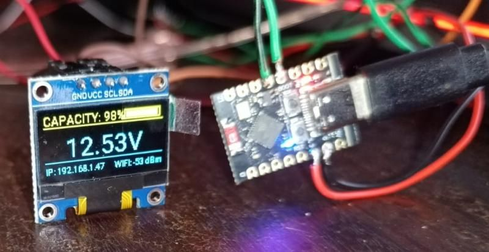
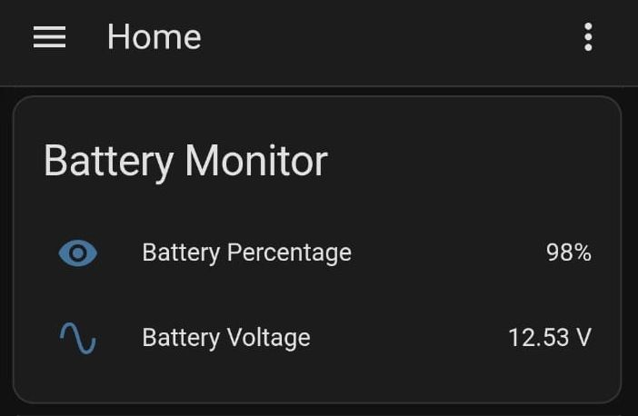
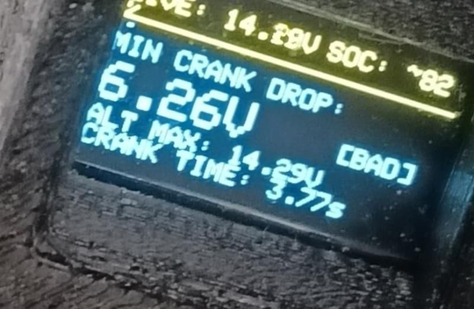

Caravan Battery Monitor
A small home-made gadget that shows how full my caravan's battery is: on its own little screen, on my phone and in my smart-home app. Clipped onto a car battery, it doubles as a tester that shows whether the car will start reliably.
Inside is an ESP32-C3 board with a 16-bit ADC and a two-colour OLED. In the caravan it watches a 100 Ah LiFePO4 battery and reports to Home Assistant. Clipped onto a car, it records how far the voltage falls while the engine cranks, which shows whether the battery or a cable is the weak link.
A monitor, not a charger. It only watches the battery, including while it charges; it never charges it. The charge percentage is calibrated for a LiFePO4 (lithium iron phosphate) battery, not other lithium-ion types. Voltage alone can only estimate the charge, so it still needs a current shunt to work fully. That's planned.
Where it's at
- Caravan monitor: working as a voltage-based monitor, showing an estimated charge on its screen and in Home Assistant, at home and on the road.
- Crank tester: working, as a separate piece of firmware on the same hardware.
- Still to do: a current shunt, which it needs to count amp-hours and give an accurate charge reading. It's planned, along with a temperature probe for winter trips.


Why a voltmeter needs 16 bits
My caravan (a Conqueror Companion off-road trailer) runs a 100 Ah, 12.8 V LiFePO4 battery. I wanted to see its charge from the house when the caravan is parked, and from my phone when we're away.
LiFePO4 makes that harder than it sounds. The discharge curve is so flat that most of the battery's capacity sits inside a few hundred millivolts, roughly 13.0 to 13.2 V. The ESP32's built-in ADC is too noisy and non-linear to split that band into useful steps.
An ADS1115 fixes it. At its ±6.144 V range one count is 0.1875 mV, which works out to about 1 mV at the battery after the voltage divider. That's fine enough to read the flat part of the curve, and fast enough to catch a starter motor pulling a car battery down, which is how the second use came about.
Hardware
| Part | What it does |
|---|---|
| ESP32-C3 mini board | Runs the firmware, Wi-Fi, I²C master |
| ADS1115 16-bit ADC | Reads the divided battery voltage (address 0x48, ADDR tied to GND) |
| SSD1306 0.96" OLED, 128×64 | Local display (address 0x3C). Top 16 rows are yellow, the rest blue |
| 10 kΩ / 2.2 kΩ divider | Scales the battery down to a voltage the ADC can read |
| 1 A inline fuse | On the positive lead, as close to the battery as possible |
| 3D-printed enclosure | Two-compartment box with a honeycomb lid and a window for the screen |
| 5 V USB power | From the caravan's USB outlet, or a power bank for crank tests |
Wiring
The OLED and ADC share one I²C bus.
| From | To | Notes |
|---|---|---|
| OLED VCC, ADS1115 VDD | ESP32-C3 3V3 | Power |
| OLED GND, ADS1115 GND | ESP32-C3 GND | Ground |
| OLED SDA, ADS1115 SDA | GPIO 8 | Shared I²C data |
| OLED SCL, ADS1115 SCL | GPIO 9 | Shared I²C clock |
| ADS1115 ADDR | GND | Sets address 0x48 |
| Battery + | Fuse, then R1 (10 kΩ) | |
| R1 / R2 junction | ADS1115 A0 | Measured point |
| R2 (2.2 kΩ) | Battery − | Also joined to ESP32 and ADC ground |
The divider
The ADC sees Vbatt × 2.2 / 12.2. A LiFePO4 battery at its 14.6 V absolute maximum gives 2.63 V at A0, and a car's 16 V worst case gives 2.89 V, both safely under the ADC's 3.3 V supply. The theoretical scale factor is 5.545; I trimmed it to 5.57 against a multimeter to absorb resistor tolerance.
The divider draws about 1 mA from the battery, which is around 26 mAh a day. That doesn't register on a 100 Ah battery.


Job one: the caravan monitor
In the caravan the unit runs ESPHome. It shows the battery on its own screen, serves a small web page, and feeds Home Assistant.
Turning voltage into a percentage
Resting voltage is mapped to state of charge using ten points I chose to follow the LiFePO4 curve, from 11.79 V at empty to 14.40 V at full charge. ESPHome interpolates in a straight line between neighbouring points, so the percentage slides smoothly instead of jumping between steps.
A voltage-only percentage is an estimate. It's only accurate with the battery resting, and it reads high while charging and low under a heavy load. Current sensing is on the list below.
Keeping the readings calm
- Voltage is sampled every second and averaged over the last 10 samples.
- The percentage is averaged again over 5 samples and clamped to 0–100%.
- Home Assistant only gets a new value when the voltage moves by 5 mV or the percentage by 1%, which keeps the history graphs readable and the database small.
Staying connected
The unit tries its networks in this order, so nothing needs reconfiguring between the driveway and a campsite:
- Home Wi-Fi. Parked at home it joins the house network and appears in Home Assistant through the native API.
- Phone hotspot. On the road it joins a phone's hotspot; a spare phone left in the caravan on USB power works well for this.
- Its own access point. With nothing familiar in range it starts a password-protected network called
Caravan-Battery-Fallback. Joining it opens a captive portal with the live readings, no internet needed.
On any of them, the built-in web page on port 80 shows voltage and charge in a browser.

The screen
These cheap two-colour OLEDs are one panel with yellow pixels in rows 0–15 and blue below, and there's a visible gap on the glass where they meet. The layout keeps text away from that seam: charge and a battery bar in the yellow strip, the voltage large in the blue area, and the IP address and Wi-Fi signal along the bottom.
Job two: the crank tester
A multimeter is too slow to catch what a battery does when the starter motor engages. The dip lasts a fraction of a second, and it's the most honest test of a starting battery there is: a healthy battery holds its voltage up under that load, and a tired one collapses.
For this job the same hardware runs a separate Arduino sketch. The ADS1115 is set to its fastest rate of 860 samples per second and the sketch keeps a running record of the lowest and highest voltage it sees.
How a test runs
- Resting reading. On power-up, with the engine off, it reads the battery and estimates charge on a lead-acid curve (11.8 V is empty, 12.7 V is full).
- Crank. When the voltage drops below 11.4 V a timer starts, and the lowest reading is locked in.
- Engine catches. The timer stops once the alternator lifts the voltage above 13.0 V, so the time shown runs from the start of cranking until the alternator takes over.
- Charging. The highest voltage after start-up is kept as the alternator reading.

Reading the results
Rules of thumb for a 12 V lead-acid starting battery. A cold morning or a small battery on a big engine will pull the numbers down.
| Reading | Value | What it means |
|---|---|---|
| Lowest during crank | 9.6 V or more | OK Low internal resistance, healthy battery |
| Lowest during crank | 8.5 – 9.5 V | Weak Losing capacity; may fail on a cold start |
| Lowest during crank | Below 8.5 V | Bad High internal resistance, a dead cell, or a cable fault (see below) |
| Alternator max | 13.8 – 14.4 V | Alternator and regulator charging normally |
| Alternator max | Below 13.5 V | Undercharging: worn alternator, slipping belt or a failing regulator |
| Alternator max | Above 15.0 V | Overcharging: regulator fault that will cook the battery |
Finding a cable fault
A low reading doesn't always mean a bad battery. A corroded terminal or a tired cable adds resistance, and at starter-motor currents that resistance costs volts. Moving the clips between tests shows where the voltage is going:
- Battery posts. Both clips on the battery terminals. This is the battery on its own.
- Positive side. Positive clip on the starter motor's main terminal, negative on the battery post. This adds the positive cable and its connections.
- Earth side. Positive clip on the battery post, negative on the engine block. This adds the earth strap and its connections.
If the battery-post test looks fine but one of the others comes out much lower, the missing voltage is being lost in that cable. As a rough guide, losing more than about half a volt on one side during a crank points to a connection to clean or a cable to replace.
Power it from a power bank for crank tests. If the tester is powered from a USB socket in the car, its ground is already tied to the chassis. Clipping the negative lead somewhere else then gives starter current a second path through the tester's thin wiring. With a power bank, the two test leads are its only connection to the car. Keep the fuse on the positive lead, and keep the leads clear of the fan and belts.
Build notes
Things that went wrong on the way, in case you're building something similar.
The percentage jumped around
My first version used if/else steps to turn voltage into a percentage. On a curve this flat, a 0.01 V wobble was enough to flip the display from 95% to 80%. Interpolating between calibration points fixed it.
ESPHome's calibration draws one straight line by default
The calibrate_linear filter defaults to method: least_squares, which fits a single straight line through all your points rather than following them. With my points that line put 12.5 V at about 44% instead of 10%, and read around 130% during a 14.4 V charge. Setting method: exact makes it interpolate point to point, which is what I wanted all along.
Noisy history graphs
Passing raw readings straight to Home Assistant gave jagged graphs and a steadily growing database. The moving averages and delta filters described above sorted that out.
The battery bar ran off the screen
During bulk charging the percentage went past 100 and the bar was drawn wider than its outline. The percentage is now clamped before it reaches the display.
What's next
- Current sensing. An INA226 shunt monitor, or a ready-made smart shunt, for proper amp-hour counting and a time-to-empty estimate. This is the real fix for voltage-based percentages.
- Temperature. DS18B20 probes in the battery box. LiFePO4 shouldn't be charged below 0 °C, so this matters on winter trips.
- A local alarm. A buzzer for low-voltage warnings when there's no phone or network around.
- Remote access. Tailscale or Nabu Casa, so the caravan can be checked from anywhere with signal.
- More caravan sensors. Fridge temperature and water tank level on the same node.
- One firmware. Fold the crank test into the ESPHome build behind a button, and redraw the screen less often during a test so it doesn't slow down sampling.
Code
The Wi-Fi details live in a separate secrets.yaml, referenced with !secret. Keep that file out of any public repository.
Caravan monitor: ESPHome configuration
esphome:
name: battery-monitor
friendly_name: "Battery Monitor"
esp32:
board: esp32-c3-devkitm-1
framework:
type: arduino
wifi:
networks:
- ssid: !secret home_wifi_ssid # 1st choice: home network
password: !secret home_wifi_password
- ssid: !secret hotspot_ssid # 2nd choice: phone hotspot on the road
password: !secret hotspot_password
ap: # nothing known in range: own access point
ssid: "Caravan-Battery-Fallback"
password: !secret fallback_ap_password
reboot_timeout: 15min
power_save_mode: NONE
fast_connect: true
captive_portal:
web_server:
port: 80
logger:
api:
reboot_timeout: 0s # default is 15min, which reboots the unit when camping without Home Assistant
ota:
- platform: esphome
i2c:
sda: 8
scl: 9
scan: true
id: bus_a
ads1115:
- address: 0x48
i2c_id: bus_a
sensor:
- platform: ads1115
multiplexer: 'A0_GND'
gain: 6.144
name: "Battery Voltage"
id: batt_volt
update_interval: 1s
unit_of_measurement: "V"
accuracy_decimals: 3
filters:
- multiply: 5.57 # divider ratio, trimmed against a multimeter
- sliding_window_moving_average:
window_size: 10
send_every: 1
- delta: 0.005
- platform: template
name: "Battery Percentage"
id: batt_pct
unit_of_measurement: "%"
accuracy_decimals: 0
update_interval: 1s
lambda: |-
return id(batt_volt).state;
filters:
- calibrate_linear:
method: exact # follow the curve point to point (default fits one straight line)
datapoints:
- 11.79 -> 0.0
- 12.50 -> 10.0
- 12.77 -> 30.0
- 12.86 -> 50.0
- 12.94 -> 70.0
- 12.99 -> 80.0
- 13.02 -> 95.0
- 13.05 -> 97.0
- 13.14 -> 99.0
- 14.40 -> 100.0
- lambda: |-
if (x > 100.0f) return 100.0f;
if (x < 0.0f) return 0.0f;
return x;
- sliding_window_moving_average:
window_size: 5
send_every: 1
- delta: 1.0
- platform: wifi_signal
name: "WiFi Signal"
id: wifi_rssi
update_interval: 10s
text_sensor:
- platform: wifi_info
ip_address:
id: wifi_ip
ssid:
id: wifi_ssid
font:
- file: "gfonts://Roboto"
id: font_tiny
size: 9
- file: "gfonts://Roboto"
id: font_med
size: 11
- file: "gfonts://Roboto"
id: font_bolt
size: 22
display:
- platform: ssd1306_i2c
model: "SSD1306 128x64"
address: 0x3C
lambda: |-
// Yellow strip (rows 0-15): percentage and battery bar
it.printf(0, 2, id(font_med), "SoC: %.0f%%", id(batt_pct).state);
it.rectangle(85, 3, 40, 10);
float pct = id(batt_pct).state;
if (pct > 100.0f) pct = 100.0f;
if (pct < 0.0f) pct = 0.0f;
float bar_width = (pct / 100.0f) * 36.0f;
it.filled_rectangle(87, 5, (int)bar_width, 6);
// Blue area (rows 16-63): voltage and network status
it.line(0, 16, 128, 16);
if (id(batt_volt).has_state()) {
it.printf(64, 24, id(font_bolt), TextAlign::TOP_CENTER, "%.3f V", id(batt_volt).state);
}
it.line(0, 50, 128, 50);
if (id(wifi_ip).has_state() && id(wifi_ip).state != "0.0.0.0") {
it.printf(0, 53, id(font_tiny), "IP: %s", id(wifi_ip).state.c_str());
} else {
it.print(0, 53, id(font_tiny), "WiFi: Connecting...");
}
if (id(wifi_rssi).has_state()) {
it.printf(128, 53, id(font_tiny), TextAlign::TOP_RIGHT, "Sig: %.0f", id(wifi_rssi).state);
}Caravan monitor: secrets.yaml template
# secrets.yaml: keep this file out of any public repo (add it to .gitignore)
home_wifi_ssid: "your-home-network"
home_wifi_password: "your-home-password"
hotspot_ssid: "your-phone-hotspot"
hotspot_password: "your-hotspot-password"
fallback_ap_password: "at-least-8-characters"Crank tester: Arduino sketch
#include <Wire.h>
#include <Adafruit_ADS1X15.h>
#include <Adafruit_GFX.h>
#include <Adafruit_SSD1306.h>
// --- OLED DISPLAY CONFIG ---
#define SCREEN_WIDTH 128
#define SCREEN_HEIGHT 64
#define OLED_RESET -1
Adafruit_SSD1306 display(SCREEN_WIDTH, SCREEN_HEIGHT, &Wire, OLED_RESET);
// --- ADS1115 CONFIG ---
Adafruit_ADS1115 ads;
// --- RESISTOR DIVIDER CALIBRATION ---
const float R1 = 10000.0; // 10k Resistor from Battery Pos to ADS pin
const float R2 = 2200.0; // 2.2k Resistor from ADS pin to GND
const float dividerRatio = (R1 + R2) / R2;
// --- DIAGNOSTIC VARIABLES ---
float currentVoltage = 0.0;
float lowestVoltage = 99.0;
float highestVoltage = 0.0;
float restingVoltage = 0.0;
int batterySOC = 0;
// Crank Timing Variables
unsigned long crankStartTime = 0;
unsigned long crankDuration = 0;
bool crankTracking = false;
bool crankFinished = false;
// Helper Function: Estimate State of Charge (SOC) - lead-acid resting curve
int estimateSOC(float volt) {
if (volt >= 12.7) return 100;
if (volt <= 11.8) return 0;
return (int)((volt - 11.8) * 111.11);
}
void setup() {
Serial.begin(115200);
if(!display.begin(SSD1306_SWITCHCAPVCC, 0x3C)) {
Serial.println(F("SSD1306 allocation failed"));
for(;;);
}
display.clearDisplay();
display.setTextColor(SSD1306_WHITE);
ads.setGain(GAIN_ONE);
ads.setDataRate(RATE_ADS1115_860SPS); // Maximize sampling rate
if (!ads.begin()) {
Serial.println("Failed to initialize ADS.");
while (1);
}
// Grab initial baseline voltage for resting SOC
delay(500);
int16_t initial_adc = ads.readADC_SingleEnded(0);
restingVoltage = ads.computeVolts(initial_adc) * dividerRatio;
batterySOC = estimateSOC(restingVoltage);
}
void loop() {
// 1. High-speed sampling
int16_t adc0 = ads.readADC_SingleEnded(0);
currentVoltage = ads.computeVolts(adc0) * dividerRatio;
// 2. Track absolute minimum drop during crank
if (currentVoltage < lowestVoltage && currentVoltage > 2.0) {
lowestVoltage = currentVoltage;
}
// 3. Track max charging voltage from alternator
if (currentVoltage > highestVoltage && currentVoltage > 13.0) {
highestVoltage = currentVoltage;
}
// 4. Crank Duration Timing
if (currentVoltage < 11.4 && !crankTracking && !crankFinished) {
crankStartTime = millis();
crankTracking = true;
}
if (currentVoltage > 13.0 && crankTracking) {
crankDuration = millis() - crankStartTime;
crankTracking = false;
crankFinished = true;
}
// 5. Render Data aligned to Yellow/Blue boundaries
display.clearDisplay();
// --- YELLOW ZONE (Rows 0 to 15) ---
display.setTextSize(1);
display.setCursor(0, 2);
display.print("LIVE: ");
display.print(currentVoltage, 2);
display.print("V");
display.setCursor(76, 2);
display.print("SOC: ~");
display.print(batterySOC);
display.print("%");
// Boundary Separator Line
display.drawFastHLine(0, 15, 128, SSD1306_WHITE);
// --- BLUE ZONE (Rows 16 to 64) ---
display.setCursor(0, 20);
display.print("MIN CRANK DROP:");
display.setCursor(0, 31);
if (lowestVoltage > 20.0) {
display.setTextSize(2);
display.print("--.-- V");
} else {
display.setTextSize(2);
display.print(lowestVoltage, 2);
display.print("V");
// Automatic Status Threshold Flags
display.setTextSize(1);
display.setCursor(92, 36);
if (lowestVoltage >= 9.6) display.print("[ OK ]");
else if (lowestVoltage >= 8.5) display.print("[WEAK]");
else display.print("[BAD]");
}
// Alternator Charging Output
display.setTextSize(1);
display.setCursor(0, 48);
display.print("ALT MAX: ");
if (highestVoltage < 13.0) {
display.print("--.-- V");
} else {
display.print(highestVoltage, 2);
display.print("V");
}
// Starter Motor Crank Duration
display.setCursor(0, 56);
display.print("CRANK TIME: ");
if (crankDuration == 0) {
if (crankTracking) {
display.print("RUNNING...");
} else {
display.print("--.-s");
}
} else {
display.print((float)crankDuration / 1000.0, 2);
display.print("s");
}
display.display();
}